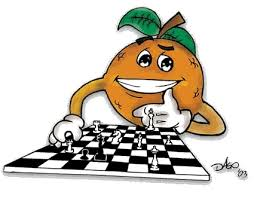
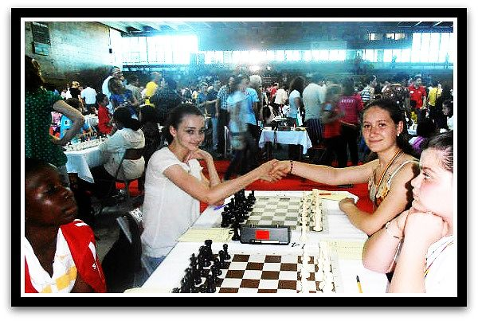
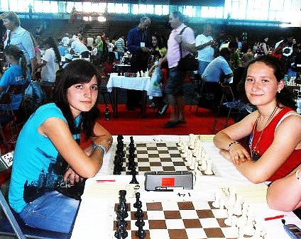

Şahul este unul din cele mai vechi jocuri inventate de-a lungul timpului.
Cu toate că originea lui este foarte disputată, cert este că el a reuşit să dăinuie pâna în zilele noastre
datorită
frumuseţii sale, a valorilor estetice ce ni le insuflă, fiind ridicat atât la rang de știință, cât si de artă.
El a fost îmbrațișat atât de oamenii de rând, de intelectuali, personalități, cât și de conducătorii diverselor
popoare sau state.
Istorici și cronicari au adus dovezi clare cu privire la existența jocului pe cele 64 de pătrățele,
meritele descoperirii sale fiind împarțite între India, China, Persia, Grecia si Egipt. Descoperirile
arheologice (piese de șah din piatră sau fildeș), cât și picturile murale atestă prezența jocului de șah
încă din Antichitate. Pictori celebri ai diverselor perioade istorice au surprins pe pânzele lor, în originale
moduri, confruntarea acerbă dintre cei doi rivali situați de o parte și alta a tablei de șah.
Numeroase legende și mituri scrise sau transmise pe cale orală vorbesc despre existența unui război închipuit
pe tabla de șah, a unei înfruntări între minți luminate. Cea mai cunoscută legendă este cea a filozofului Sissa,
legenda boabelor de grâu, preluata din folclorul indian.
Unul dintre cei mai importanți prozatori români, Mihail Sadoveanu, a repovestit în stilul său inconfundabil
această legendă în nuvela Soarele în baltă sau aventurile șahului. Scriitorul face o paralelă între lumea
șahului și cea reală, comparând piesele de șah cu oamenii care aparțin diverselor ierarhii, arătând
similitudinile dintre regulile șahului și cele ale lumii reale, îndemnând la cugetare, apoi la acțiune.
Sadoveanu încheie nuvela într-o nota filozofică, îndemnându-i pe cei ce dețin puterea să nu uite că sunt și
ei oameni supuși greșelilor.
De-a lungul timpului regulile de joc au suferit modificări importante, fiind influențate de condițiile și
stilul de viață al diverselor popoare.
Primul joc cu reguli asemănătoare șahului a fost jocul indian chaturanga, apărut în jurul anului 570 e.n.
El este considerat de istorici ca fiind strămoșul jocului cu patrățele albe si negre. Acesta se desfașura
între patru adversari, având piese asemanatoare șahului, dar dispuse diferit.
Dupa anul 590 e.n. șahul a pătruns și în lumea arabă, în Persia, schimbându-și denumirea în satrandj.
Așezarea pieselor și regulile de joc erau foarte asemănatoare celor impuse astazi în șah. Sub acestă
forma avea să pătrundă și în Europa, fiind raspândit de popoarele arabe prin nordul Africii, cunoscut
sub denumirea de șah european.
De-a lungul secolelor șahul european a continuat să se dezvolte, contribuții importante la stabilirea
principiilor de tactică și strategie, la dezvoltarea deschiderilor și a finalurilor având diverse personalități
din domeniul șahului și campioni mondiali despre care vom vorbi în secțiunea "Campionii şahului".
Regulile jocului de șah
Regulile jocului de șah sunt reguli care guvernează modul de a juca șah. În timp ce originile exacte ale
șahului sunt neclare, regulile moderne au fost luate mai întâi din Italia în timpul secolului al șaisprezecelea.
Regulile au continuat a fi ușor modificate până la începutul secolului al nouăsprezecelea, când ele au ajuns la forma curentă. Regulile de
asemenea variau din loc în loc. Azi Federația Internațională de Șah (FIDE), cunoscută de asemenea ca Organizația
Internațională de Șah, stabilește regulile standard, cu modificări neînsemnate făcute de unele organizații naționale pentru propriile lor
obiective. Schimbări mici de reguli există și la șahul blitz, șahul prin corespondență, șahul online și variantele de șah.
Șahul este un joc jucat de două persoane pe o tablă de șah, cu 32 piese (câte 16 pentru fiecare jucător)
de șase tipuri. Fiecare tip de piesă este mutată pe tablă într-un mod diferit. Scopul jocului este de a da mat,
adică de a ataca regele în așa fel încât capturarea sa să fie inevitabilă. Jocul nu trebuie neapărat să se
termine cu mat — jucătorii pot și ceda, dacă cred că vor pierde. În plus există diferite căi de a termina
jocul cu remiză (egalitate).
Pe lângă mișcările pieselor, regulile guvernează și echipamentul folosit, controlul timpului, comportamentul
și etica jucătorilor, acomodări pentru jucătorii handicapați, înregistrarea mutărilor folosind notația precum
și procedurile folosite pentru neregulile din timpul jocului.
Șirurile albe de pe tablă sunt marcate cu litere, de la a la h, de la stânga albului (flancul damei) la dreapta
albului (flancul regelui). Similar, liniile orizontale sunt numerotate de la 1 la 8, începând cu linia de lângă
alb. Astfel, fiecare pătrățel de pe tablă poate fi identificat cu litera verticalei și cu numărul orizontalei
sale. Regele alb, de exemplu, începe jocul de pe pătrățelul e1, iar unul din cei doi cai negri de pe b8 și poate
muta pe a6 și c6.
Structura inițială
| Piesa | Rege | Regină | Turn | Nebun | Calul | Pion |
|---|---|---|---|---|---|---|
| Număr | 1 | 1 | 2 | 2 | 2 | 8 |
| Valoare | Supremă | 9 | 5 | 3 | 3 | 1 |
| Simbol | |
|
|
|
|
Fiecare camp de pe tabla de șah este identificat cu un cuplu unic dintr-o literă și un număr. Șirurile verticale — denumite coloane (8) — sunt marcate cu litere de la a la h, de la stânga albului (flancul reginei) la dreapta albului (flancul regelui). Similar, șirurile orizontale — denumite linii (8) — sunt numerotate de la 1 la 8, începând de la orizontala de lângă alb. Deci, fiecare pătrățel de pe tablă e identificat cu litera verticalei și numărul orizontalei. Regele alb, de exemplu, începe jocul de pe pătrățelul e1, iar calul negru de pe b8 și poate muta pe a6 și c6.
Dacă pionul jucătorului A mută două pătrățele și pionul jucătorului B are un pion pe a cincea
linie și pe linia vecină, pionul lui B poate captura pionul lui A ca și cum pionul lui A a
 mutat doar un pătrățel. Această capturare poate fi făcută doar imediat la mutarea următoare. În acest
exemplu o capturare en passant scoate de pe tablă pionul negru, iar pionul alb poate muta pe pătrățelul f6 marcat cu „x”.
mutat doar un pătrățel. Această capturare poate fi făcută doar imediat la mutarea următoare. În acest
exemplu o capturare en passant scoate de pe tablă pionul negru, iar pionul alb poate muta pe pătrățelul f6 marcat cu „x”.
Pe lângă plopii fără soţ Adesea am trecut; Mă cunoşteau vecinii toţi - Tu nu m-ai cunoscut. La geamul tău ce strălucea Privii atât de des; O lume toată-nţelegea - Tu nu m-ai înţeles. De câte ori am aşteptat O şoaptă de răspuns! O zi din viaţă să-mi fi dat, O zi mi-era de-ajuns; |
O oră să fi fost amici, Să ne iubim cu dor, S-ascult de glasul gurii mici O oră, şi să mor. Dându-mi din ochiul tău senin O rază dinadins, În calea timpilor ce vin O stea s-ar fi aprins; Ai fi trăit în veci de veci Şi rânduri de vieţi, Cu ale tale braţe reci Înmărmureai măreţ, |
Un chip de-a pururi adorat Cum nu mai au perechi Acele zâne ce străbat Din timpurile vechi. Căci te iubeam cu ochi păgâni Şi plini de suferinţi, Ce mi-i lăsară din bătrâni Părinţii din părinţi. Tu trebuia să te cuprinzi De acel farmec sfânt Şi noaptea candelă s-aprinzi Iubirii pe pământ. |
|  |
Puteri
|
Radicali
|
Formule de Calcul Prescurtat
|
Logaritmi
|
| > |  > > |
> |